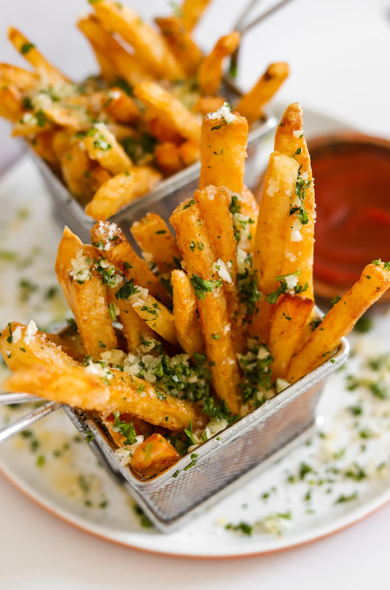
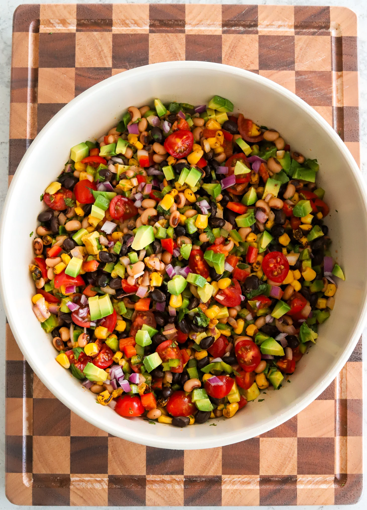
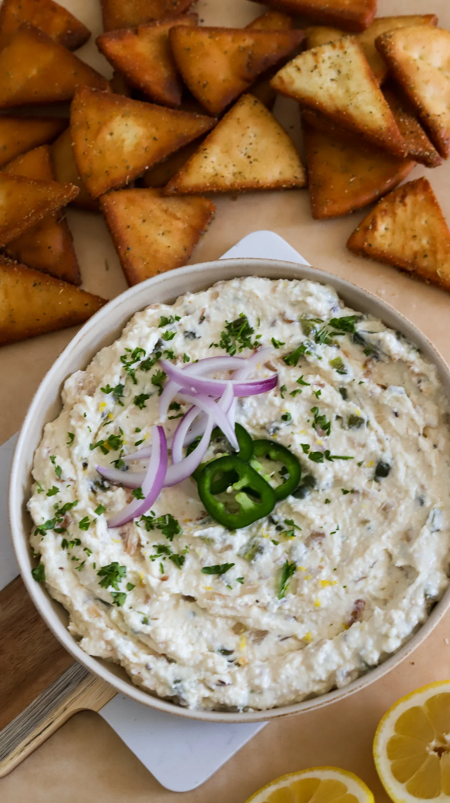

My Favorite Recipes
Crispy Garlic Parmesan Fries
Prep Time 1 hour
Cook Time 30 mins
Total Time 1 hour 30 mins
Author: Hajar Larbah

Ingredients
- 3 large Russet potatoes
- 2 to 3 tablespoons cornstarch
- vegetable oil
- 1/4 cup unsalted butter
- 1 tablespoon parsley finely chopped
- 1 tablespoon garlic finely minced
- 2 to 3 tablespoons parmesan grated
- 1/4 teaspoon black pepper
- 1/4 teaspoon dried oregano
- 1/2 teaspoon salt
Directions
-
To a small bowl, add the melted butter, parsley, garlic,
parmesan, salt, black pepper, and oregano. Mix together and
set aside.
- Rinse and peel the potatoes completely.
-
Cut each potato vertically into rectangular slices,
about 1/4 inch thick. Then stack them on top of each other
and cut across to make the signature fry shape, also 1/4
inch. I like to make them thin but you can as thin or as
thick as you’d like.
-
Transfer to a bowl filled with ice and water and let it soak
for 30 minutes.
-
Drain the ice water and rinse the potatoes 2 to 3 times,
shaking them around well to get rid of any excess starch.
-
Bring water to a boil in a pot and add the potatoes in. Boil
just for 5 to 6 minutes. You don’t want them to be soft where
they break. We are just par-boiling to help achieve that crispy
layer.
-
Pat the fries completely dry and add them to a tray or large
bowl. Sprinkle the cornstarch and shake around so each one is
coated evenly.
-
Heat oil in a frying pan over medium-low heat until the oil
reaches about 250°F. You don’t want to be the oil to be that
hot for the first fry.
-
Add the French fries and flash fry for 3 to 5 minutes. They
will not be golden but they’ll hold their shape well. Fry in
batches so the pan is not over-crowded.
-
Get the oil hotter now, about 350°F. Add the fries back in and
fry until beautifully golden and crispy, making sure to move
them around so they evenly brown and crisp up.
-
Transfer to a wire rack to drain any excess oil. Sprinkle a
little bit of salt.
-
Add to a bowl along with the garlic butter. Toss around so the
fries are coated evenly. Taste and adjust salt if needed.
- Enjoy with ketchup or your favorite dipping sauce!
Cowboy Caviar
Prep Time 20 mins
Total Time 20 mins
Author: Hajar Larbah

Ingredients
- 1/3 cup neutral oil, like avocado oil
- 3 tablespoons water
- 2 tablespoons honey
- 2 tablespoons apple cider vinegar
- 2 tablespoons chipotle adobo paste
- 1 tablespoon lime juice
- 1 teaspoon yellow mustard
- 1/2 teaspoon salt, adjust to taste
- 1/2 teaspoon paprika
- 1/2 teaspoon black pepper
- 15 oz can black eyed peas, drained and rinsed
- 15 oz can black beans, drained and rinsed
- 1 cup yellow sweet corn
- 1 cup grape tomatoes, chopped
- 1 red bell pepper, chopped small
- 1 green bell pepper, chopped small
- 1 jalapeño, seeds and stem removed, finely diced
- 1/2 red onion, chopped small
- 3 to 4 tablespoons cilantro, finely chopped
- 1 large avocado, or 2 small, cubed small
- tortilla chips
- salt, to taste
Directions
-
Make the dressing: Add the oil, water, honey, apple cider
vinegar, chipotle adobo paste, lime juice, mustard, salt,
paprika, and black pepper to a blender and blend until smooth.
You can also use an immersion blender in a jar, or shake
everything together in a mason jar with a tight lid until
emulsified.
-
Prepare the veggie blend: In a large mixing bowl, combine the
black eyed peas, black beans, corn, grape tomatoes, red bell
pepper, green bell pepper, jalapeño, red onion, and cilantro.
-
Bring it together: Pour the dressing, adding as little or as
much as you like, over the veggie mixture and gently toss until
everything is evenly coated. You can always add more as you
taste and go. I used about 2/3 of the dressing and stored the
rest in the fridge in an air tight container.
-
Add the avocado: If serving right away, fold in the avocado
now. If making ahead, wait until just before serving to add it
so it stays fresh.
-
Serve: Taste and adjust the salt if needed. Serve with tortilla
chips, or chill for 30 minutes before serving to let the
flavors meld.
Copycat Cava Pita Chips
Prep Time 15 mins
Cook Time 15 mins
Total Time 30 mins
Author: Hajar Larbah

Ingredients
- 4 pitas, cut into triangles
- vegetable oil, for frying
- 1 teaspoon Italian seasoning
- 1 teaspoon salt
- 1 teaspoon lemon pepper
- 1/2 teaspoon black pepper
- 1/2 teaspoon garlic powder
- 1/2 teaspoon onion powder
Directions
-
In a small bowl, combine the Italian seasoning, salt, lemon
pepper, black pepper, garlic powder, and onion powder to make
the spice mix. Set aside.
- Cut each pita into 8 triangles or pieces.
-
Heat vegetable oil in a frying pan so it’s hot, around 325 to
350°F.
- Fry the pita in batches so they’re not overcrowded.
-
Once golden and crispy, remove the chips from the oil and
transfer them to a wire rack to drain excess oil. Do not fry
too much because you want it to be soft in the center but
crispy on the edges just like Cava.
-
Once all the bread is fried, transfer the pita chips to a bowl
and add as much seasoning as you like.
-
Shake around to toss it so all the chips are evenly seasoned.
- Serve with hummus or your favorite dip to enjoy!